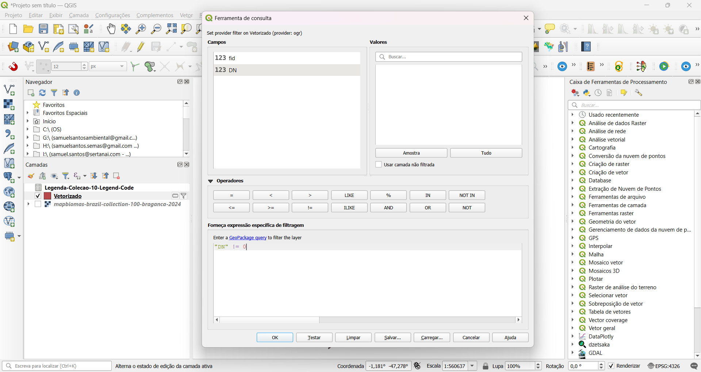
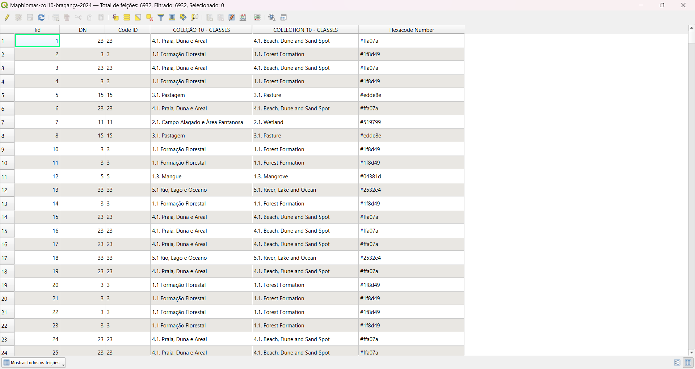

Introdução
A consistência visual é um requisito fundamental ao trabalhar com a série histórica do MapBiomas. Quando analisamos mudanças ao longo de décadas, qualquer discrepância na simbologia entre os anos pode levar a interpretações erradas ou, no mínimo, comprometer a qualidade final do produto cartográfico.
No entanto, configurar manualmente a legenda para dezenas de camadas vetoriais é uma tarefa ineficiente e sujeita a erros operacionais. Para resolver isso, estruturei uma rotina em PyQGIS que automatiza o processo. O método apresentado aqui garante que a taxonomia oficial seja aplicada uniformemente em toda a série, assegurando a integridade visual dos dados de 1985 até o presente.
Resumo do Fluxo
O processo foi desenhado para garantir a integridade dos dados ao transitar do matricial para o vetorial:
- Conversão em lote de Raster para Vetor preservando o Code ID;
- Limpeza de geometria para remoção de ruídos de processamento;
- Enriquecimento tabular (Join) com a estrutura oficial de classes;
- Aplicação dinâmica de estilo categorizado via script Python.
Pré-requisitos
- QGIS 3.x instalado
- Conhecimento básico de geoprocessamento
- Dados raster do MapBiomas (Coleção 10 ou superior)
- Legenda oficial do MapBiomas em formato CSV
Atenção
Este tutorial utiliza dados poligonizados. Para grandes áreas, o processo pode consumir recursos computacionais significativos. Considere trabalhar com recortes regionais se necessário.
Passo a Passo
Poligonizar o Raster
O primeiro passo é converter o raster MapBiomas para formato vetorial. Isso permite que façamos relações (joins) com tabelas externas e apliquemos simbologia categorizada.
Embora o formato raster seja ideal para álgebra de mapas, a vetorização torna-se necessária para operações de superposição complexas, como o cruzamento com o CAR (Cadastro Ambiental Rural) ou recortes por limites administrativos. O ponto crítico nesta etapa é garantir que a conversão mantenha o Code ID original do pixel na tabela de atributos da nova geometria.
No QGIS:
- Carregue seu raster MapBiomas (mapbiomas-brazil-collection-100-braganca-2024.tif) - baixe o arquivo deste tutorial
- Acesse: Raster → Conversão → Poligonizar (Raster para Vetor)
Na janela que se abre, configure:
- Camada de entrada: Seu raster MapBiomas
- Nome do campo da banda: DN (este campo armazenará o Code ID)
- Usar indexação de 8 conexões: Ativado (melhora a geometria)
- Saída: Deixe como "[Criar camada temporária]" - vamos salvá-la posteriormente
Resultado esperado
Você terá uma camada temporária com polígonos classificados, onde cada feição possui um atributo DN correspondente ao Code ID do MapBiomas.
Limpar Bordas
Durante a poligonização, são criadas feições indesejadas com valor DN = 0. Vamos removê-las para otimizar o desempenho e limpar a visualização.
Aplicar filtro de DN:
- Clique com botão direito na camada temporária → Filtrar...
- Ou acesse: Vetor → Ferramentas de Consulta → Selecionar por Expressão
Configure a expressão:
"DN" != 0
Aplique o filtro e exporte apenas as feições filtradas para uma nova camada temporária.
Fazer Join com a Legenda Oficial
Agora vamos enriquecer nossos dados conectando o campo DN com a legenda oficial do MapBiomas.
Preparar a legenda:
- Utilize o arquivo Legenda-Colecao-10-Legend-Code.csv (versão PDF oficial). Este CSV é uma extração do PDF oficial da legenda da Coleção 10 do MapBiomas.
- Adicione o CSV ao QGIS como camada
Configurar o Join:
- Clique com o botão direito na camada vetorial → Propriedades
- Vá até a aba Joins
- Clique no botão + verde
- Configure:
- Camada de junção: Legenda-Colecao-10-Legend-Code
- Campo de junção: Code ID
- Campo de destino: DN
- Campos unidos: Selecione "COLEÇÃO 10 - CLASSES" e "Hexacode Number"
- Marque "Campo personalizado e prefixo do nome"
- Delete o prefixo padrão, deixando o campo vazio (isso cria campos sem prefixo)
Importante: Persistir o Join
Joins no QGIS são voláteis por padrão. Para torná-los permanentes, você precisa salvar uma nova camada com os dados unidos:
- Clique com botão direito na camada → Exportar → Salvar Feições Como...
- Formato: ESRI Shapefile
- Salve em: shape/mapbiomas-brazil-collection-100-braganca-2024.shp
- Este passo consolida o join, fazendo os campos mesclados fazerem parte do shapefile definitivamente
- Após salvar, você pode descartar a camada temporária
Verifique o resultado:
Abra a tabela de atributos do shapefile salvo. Você deve ver os campos da legenda já incorporados:
Resultado
Agora seu shapefile possui os campos COLEÇÃO 10 - CLASSES e Hexacode Number permanentemente integrados.
Automatizar com PyQGIS
Vamos usar o console Python do QGIS para aplicar a simbologia em todas as camadas de uma vez.
Abrir o Console Python:
- No QGIS, acesse: Plugins → Console Python (ou pressione Ctrl+Alt+P)
Abrir o Editor:
- No console Python, clique no ícone "Mostrar Editor"
Carregar o Script:
- Baixe o script: Download script_simbologia_pyqgis.py
- No editor, clique em "Abrir Script" e selecione o arquivo baixado
Lógica de Execução
Em vez de carregar um arquivo de estilo estático (.qml), o script itera sobre as camadas ativas e constrói o renderizador categorizado em tempo real. Ele lê os atributos de classe e cor (hex) consolidados pelo Join e aplica a simbologia apenas para as categorias efetivamente presentes na geometria. Isso resulta em uma legenda limpa e precisa, sem classes vazias.
Configurar as Camadas:
Edite a linha 12-14 do script para listar todas as camadas que deseja estilizar:
LAYER_NAMES = [
"mapbiomas-brazil-collection-100-braganca-2024",
"mapbiomas-brazil-collection-100-braganca-2023",
"mapbiomas-brazil-collection-100-braganca-2022"
# adicione quantas camadas precisar
]
Executar e Visualizar o Resultado
Com tudo configurado, chegou a hora de executar o script.
- No editor Python, clique no botão "Executar script"
- Aguarde a mensagem de confirmação no console
Mensagens de Sucesso
Se tudo correu bem, você verá mensagens como:
Classes únicas encontradas: 29.
Simbologia aplicada com sucesso na camada: mapbiomas-brazil-collection-100-braganca-2024
Simbologia aplicada com sucesso na camada: mapbiomas-brazil-collection-100-braganca-2023
Processo de Simbologia Concluído.
Resultado final:
Todas as suas camadas agora estão com a simbologia oficial do MapBiomas aplicada automaticamente.
Vantagens desta Abordagem
- Velocidade: Aplica simbologia em dezenas de camadas em segundos
- Padronização: Garante cores consistentes com a legenda oficial
- Reprodutibilidade: Mesmos parâmetros geram mesmos resultados
- Escalabilidade: Funciona para qualquer quantidade de camadas
- Automação: Reduz trabalho manual e possibilidade de erros
Possíveis Problemas e Soluções
Erro: Campos não encontrados
Causa: Os nomes dos campos no script não correspondem aos nomes reais após o join.
Solução: Verifique os nomes exatos abrindo a tabela de atributos. Se você configurou o join sem prefixo, use COLEÇÃO 10 - CLASSES e Hexacode Number. Ajuste as variáveis CLASSIFICATION_FIELD e HEXACODE_FIELD no script conforme necessário.
Cores não aparecem
Causa: Códigos hexadecimais podem estar sem o símbolo #.
Solução: O script já trata isso automaticamente (linhas 47-48), mas verifique se o CSV está correto.
Script não encontra camadas
Causa: Nomes das camadas no script não correspondem aos nomes no projeto.
Solução: Copie os nomes exatos do painel de camadas do QGIS (sem a extensão .shp).
Próximos Passos
Agora que você domina essa técnica, pode explorar variações como:
- Criar layouts de mapa automatizados com o QGIS Atlas
- Exportar estatísticas de área por classe de uso
- Gerar mapas de mudança de uso do solo ao longo dos anos
- Integrar com outras bases de dados geográficas
Baixe os Arquivos do Tutorial
Acesse o repositório no GitHub para baixar o script, dados de exemplo e a legenda oficial.
Ver no GitHubConclusão
A integração do Python ao fluxo de trabalho do QGIS é o que permite escalar processos de geoprocessamento com segurança. A rotina demonstrada aqui resolve especificamente a padronização do MapBiomas, mas a lógica é facilmente adaptável para outras bases de dados categóricas, como mapas de uso do solo do IBGE ou classificações próprias.
O código está disponível para uso e adaptação conforme as demandas do seu projeto.